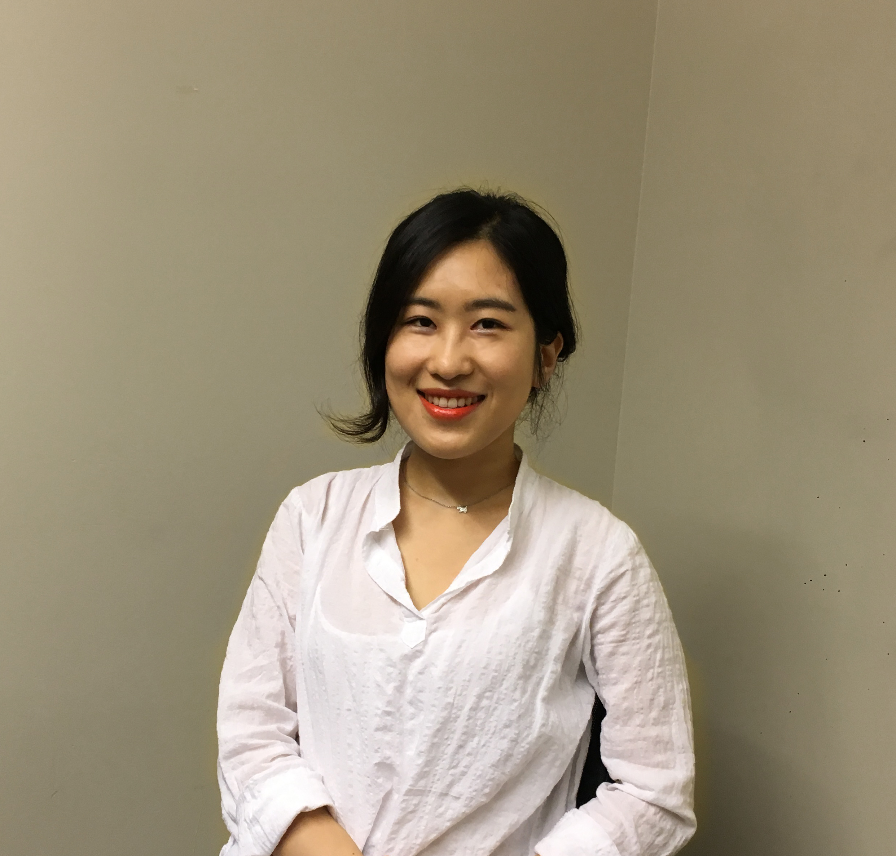

Hello,
I am Hanna, UX designer
I'm currently a master's student specializing in Human-Computer Interaction at the University of Michigan School of Information.
Previous grad school, I had worked at Korean Standards Association. My responsibilities included conducting in-depth research on different services with different levels of customer satisfaction. During my undergraduate years, I studied Industrial Engineering and Chinese Economy & Trade in South Korea.
In my spare time, I love looking through picture books, exploring cafes in a town, and listening to music.
